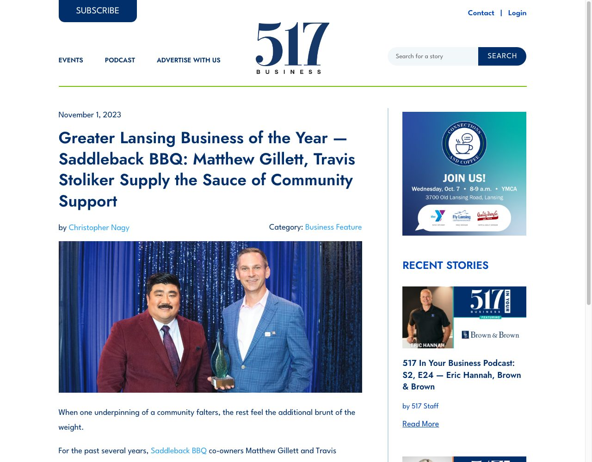

The Best Sandwiches in America — Saddleback BBQ
Food Network named Saddleback's Rib Sandwich one of "The Best Sandwiches in America" — baby back ribs slow-cooked in Michigan hardwoods, deboned, served with housemade pickles, onions, and housemade BBQ sauce. The Food Network description: the sandwich "puts the McRib to McShame." Travis is co-owner of Saddleback BBQ.
Best BBQ in Michigan — Saddleback BBQ
Mental Floss named Saddleback BBQ the Best BBQ in Michigan in 2016. The national recognition preceded the Food Network mention and helped establish Saddleback as a destination restaurant. Travis is co-founder and co-owner.
Saddleback Barbecue Supports A Small Business In Need
Community news profile of Saddleback's outreach to struggling small businesses during COVID-19. Names Travis Stoliker and Matt Gillett as co-owners. Documents two major recognitions: Mental Floss "Best BBQ in Michigan" (2016) and SBDC Small Business of the Year (2018).
Ann About Town: Saddleback BBQ
Early feature review of Saddleback BBQ in ELi's "Ann About Town" column — one of the first significant local press pieces on the restaurant.
Greater Lansing Business of the Year — Saddleback BBQ: Matthew Gillett, Travis Stoliker Supply the Sauce of Community Support
"Earning the Business of the Year title is a profound honor for me and our dedicated team. It aligns us with an elite cadre of past recipients who have set industry-leading standards. This award not only validates the relentless efforts of our founder, Matt Gillett, but it also celebrates the commitment of our team and the unwavering support from our friends, families and customers."
"Saddleback is laser-focused on sustained growth and deepening our community impact. We aspire to be more than just a business; we aim to be a community pillar offering rich career advancement opportunities for our employees. Our ethos is rooted in the belief that a rising tide lifts all boats; therefore, empowering fellow entrepreneurs in the community is a mission we're committed to."
Business of the Year profile covering school lunch debt initiative, holiday meals, helping competitor restaurants, wage transparency, 401(k) program, MSU concessions, and retail sauces.

Lansing pizza joint's debut dampened by road construction
"Monday arrived, and I was driving down Mount Hope and saw that the road was closed off. It's a bit concerning that we're opening a restaurant on a road that has closed signs on it. It will be difficult for customers to get here."
Slice by Saddleback opening on Pennsylvania Ave vs. road closure. Travis named as Slice co-owner.
Saddleback BBQ owners paid off one school district's lunch debt. Then the giving snowballed
"It started with me hearing about student lunch debt for the first time and thinking 'We should do something about that.' Then Matt got involved."
"I think people are just really yearning for connection and community. We've all been trapped inside for 12 months and I think we just want to help each other."
Mason school district lunch debt — $1,753.21 check grew to $6,300+ across nine school districts. Also picked up by the Christian Science Monitor daily brief on March 31, 2021.
Saddleback Barbecue pays it forward, helps Coach's Bar & Grill survive pandemic
"Travis says he's used his 20-thousand Facebook followers to help donate thousands of meals during the pandemic."
"It's just been incredible to see the impact our community can have in helping out the community. That's what led us to wanting to help other restaurants."
"Restaurants are a family story and Coach's is no different. To be able to help a family and have the community come out and support is just incredible."
Saddleback donated a 4-H hog and used social media reach to promote Coach's Bar & Grill after it suffered a 65% sales drop during COVID-19.
Small Business of the Year — Saddleback BBQ
Michigan SBDC (Small Business Development Center) named Saddleback BBQ Small Business of the Year in 2018, covered by the Lansing State Journal. Travis Stoliker is co-founder and co-owner.